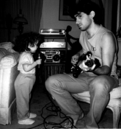

<HTML><HEAD> <TITLE>Levi Asher</TITLE> </HTML>

<BODY BACKGROUND="" BGCOLOR="#ffffff" TEXT="#000000"
LINK="#009f2f" ALINK="#00008f" VLINK="#004fcf">
<META NAME="KEYWORDS" CONTENT="Levi,Asher,Levi Asher,Brooklyn">
<H1>Levi Asher</H1>

I know my e-mail address says 'brooklyn', but I live in Queens.  Maybe I 
picked 'brooklyn' after listening to the Beastie Boys too many times, or maybe
it's because of a conversation with my wife (a Jersey Girl) when I was 
explaining to her about my family's origins.  
"So where did your mother grow up?" "Brooklyn." "What about your father?" 
"Brooklyn." "And then when they got divorced, where'd your stepfather and 
stepmother come from?" "Brooklyn."  "So where'd they all go to school?" 
"Well, my mother and stepmother both went to Erasmus the same time that Barbra 
Streisand went there (they didn't know each other and they didn't know 
Barbra either), and my father went to New Utrecht which you can see in 
the beginning of 'Welcome Back Kotter' and my stepfather went to 
Brooklyn Tech, and then they all went to Brooklyn College, except my father, 
who did go there but afterwards studied art at Pratt.""Oh really, where's 
Pratt?"  "Brooklyn." <P>

So anyway I live in Queens now, and in fact I named my new web
fiction/performance art project after this humble and mostly-unloved
part of New York City.  The new project is called <I>Queensboro Ballads</I>,
and you can see it 
<A HREF="http://www.levity.com/brooklyn/">here</A>.
If you visit and have any comments, I'd love to hear them.
My other web site is 
<A HREF="http://www.litkicks.com/">Literary Kicks</A>,
dedicated to the Beat Generation and a few other things I felt like
writing about.<P>  

You can also read some of my stories in the online fiction journal
<A HREF="http://ftp.etext.org/Zines/InterText/intertext.html">InterText</A> 
(I'm in the March '94 and September '94 issues), or in several recent
episodes of 
<A HREF="http://enterzone.berkeley.edu/enterzone.html">Enterzone</A>.
That's it for online fiction -- I'm also finishing up my latest draft of
my novel, which I am trying to get published on paper (you know, the way
they used to do it).  <P>

Just for the fun of it, here's the list of 
<A HREF="../Topics/LeviFavorites.html">my fifteen favorite novels</A>.<P>

I'm 33 years old, and I have a day-job as a Unix client-server consultant on 
Wall Street, where I secretly rebel by wearing conservative black sneakers that 
look like shoes unless you study them up close.  This has worked well except
for one time when somebody dropped a pencil, kneeled to pick it up, and 
suddenly noticed.  I had to kick him in the face until he was dead. <P>


This is me and my daughter in my in-law's living room.<P>

When I'm on the Web I like to check out my favorite musicians: <P>
<UL>
<LI><A HREF="http://reality.sgi.com/employees/howells/dylan.html">Bob Dylan</A>
<LI><A HREF="http://daneel.acns.nwu.edu:8081/">Lou Reed/Velvets</A>
<LI><A HREF="http://turtle.ncsa.uiuc.edu/alan/beatles.html">John Lennon/Beatles</A>
<LI><A HREF="http://www.nando.net/music.gm/BeastieBoys/">The Beastie Boys</A>
<LI><A HREF="http://k2.princeton.edu/floyd">Pink Floyd</A>
<LI><A HREF="http://www.luth.se/nirvana">Nirvana</A>
<LI><A HREF="http://www.cs.cmu.edu/~mleone/dead.html">Grateful Dead</A>
<LI><A HREF="http://www.ai.mit.edu/~isbell/HFh/reviews/000-toc.html">Misc. Rap/Hip-Hop Bands </A>
</UL>

Or my favorite religion:      
<A HREF="http://www.rt66.com/~mbobkoff/sangha.html">
Miriam's Buddhism Page</A><P>

Or my favorite 70's tv show:
<A HREF="http://www.teleport.com/~btucker/bradys.htm">The Brady Bunch</A><P>  

Thanks for giving a fuck.  See you on the Web. <P>

Levi Asher = brooklyn@litkicks.com<P>
</BODY></HTML>
